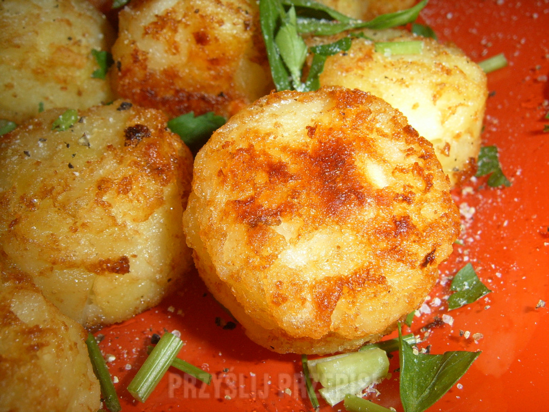

Rosti

Description
Rosti is a kind of Swiss latkas, made from grated, cooked potatoes. This recipe shows steps for mini, round version of Rosti which is ideal either as a side or as a snack.
Ingridients
For a 24 pieces batch:
- half a kilogram of potatoes, ideally the kind used for salads
- large onion
- 2 tablespoons of vegetable oil
- salt and pepper to taste
- fresh parsley for garnish
Steps
-
Peel the potatoes and cook them for 10 minutes or until tender. Let them rest and cool in the fridge over night. If that's not possible, letting them cool is enough.
-
Grate potatoes and onion on a grater with large holes. Mix with oil, salt and pepper.
-
Coat a muffin form with oil. Carefully fill the form with potatoe mixture and make sure it's firmly settled.
-
Bake in 200-220 degree Celcius oven for around 15 minutes or until golden-brown. Serve hot with parsley, additional springle of salt and freshly ground pepper.